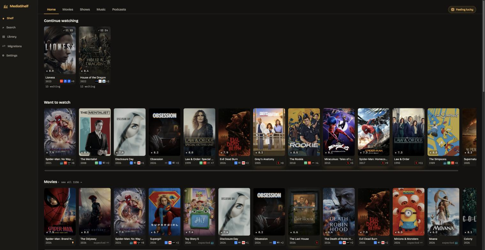
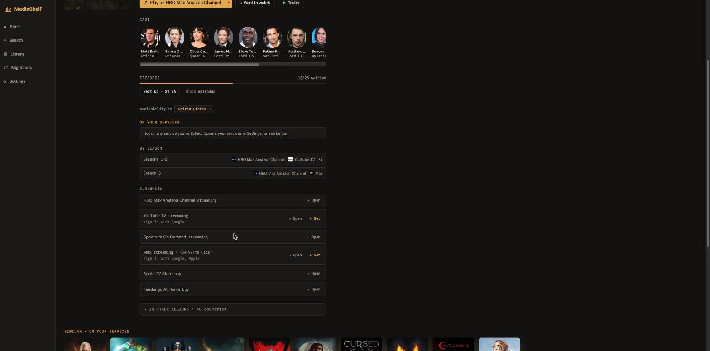

Self-hosted. What you can watch right now is lit, everything else is dimmed with a link to where it lives. Movies, shows, music and podcasts in one place.

Titles on services you subscribe to are lit; everything else is dimmed with a deep link into the app that has it. A couple hundred services, per region.
Movies, shows and music together. If something isn't available in your country, the title page tells you where in the world it is.
Spotify, YouTube and Apple Music through official SDKs, in one queue across services. A track blocked on one service resolves to the best match on another.
Move likes and playlists between music services. Fuzzy matches go to a review queue, quota limits pause and resume, and any job can be undone.
Subscribe by RSS or OPML and play episodes in-app. Installs to your phone or desktop and keeps working offline with your last-synced data.
Pick a genre and how much time you have, roll the dice, and get something random you can watch right now on your own services.
Tick episodes or whole seasons, and a "Continue watching" rail leads the shelf with a one-tap mark for the next one. Shows whose seasons sit on different services get a by-season breakdown.
Save anything with one button, paste or upload an existing list, or bring your "My List" over from ten streaming services (Chrome or Firefox) with the companion browser extension.
Trending this week from TMDB, and a "Popular right now" rail built from the Top 10 Netflix publishes as open data. Both fill themselves on a stock install.
